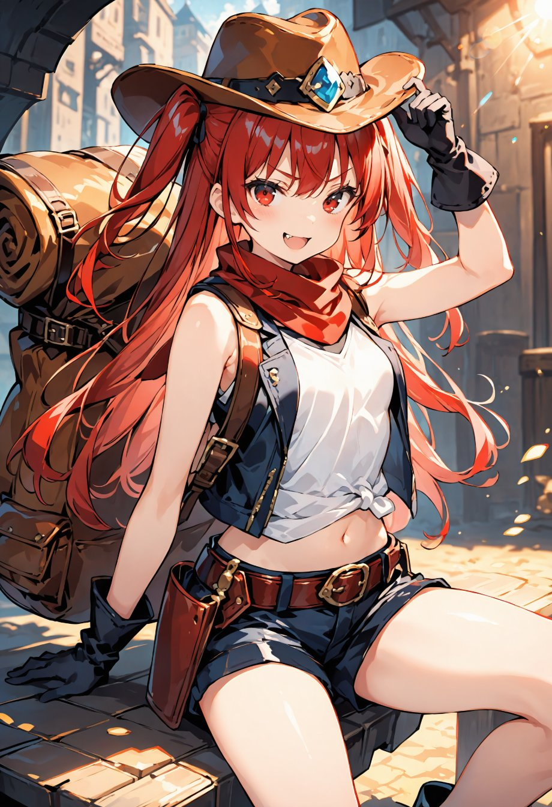

第14話
美桜ちゃんはエルフの里を後にし、港町へと辿り着いた。 町は活気に満ちており、商人たちが賑やかに声を張り上げ、市場には見たこともない品々が並んでいる。 だが、到着して早々、船の船長から「次の出航は数日後だ」と告げられる。
「えぇっ！？そんなに待つの？」 美桜ちゃんは思わず声を上げたが、すぐに気を取り直した。 「しょうがない、待つ間にこの町を楽しむしかないよね！」
町を歩き回りながらどう過ごそうか考えていると、市場の中でひときわ目を引く少女が目に入った。 赤い髪をツーサイドアップに結んだ少女で、革のジャケットにショートパンツという活動的な装いだ。 腰には大きな地図と道具がぶら下がっており、まさに冒険者といった風貌。 美桜ちゃんは思わず立ち止まった。
その少女がふいに振り返り、じっと美桜ちゃんを見て、ふっと眉を上げた。 「そこの君、何ぼーっとしてんの？まさか迷子？」
美桜ちゃんは驚きで言葉を失った。 目の前の少女は、自分の元いた世界の華恋ちゃんにそっくりだったのだ。 「えっ、華恋ちゃん……？」と思わず口にする。
「はぁ？なんて？」 「え、あっ、い、いえ……！」 美桜ちゃんは慌てて言葉を濁したが、目の前の少女は怪訝そうな表情を浮かべている。
「何それ、人の名前？だったら勘違いしないでよね。私の名前はカレン、トレジャーハンターのカレンよ！」 カレンは腰に手を当て、少し得意げな笑みを浮かべる。そしてすぐに首をかしげ、不思議そうに美桜ちゃんを見た。 「それにしても、何よその反応。私と知り合いなわけ？」
「あ、いや、全然違うの！ただ、あなたの顔が私の知ってる子にすごく似てて……」 美桜ちゃんは慌てて誤魔化したが、心の中では不思議な感覚に包まれていた。 ミユ姫が美優ちゃんに似ていたのと同じように、このカレンも華恋ちゃんそっくりだなんて……こんな偶然ってあるの？

カレンはじろじろと美桜ちゃんを見つめると、ふっと肩をすくめた。 「なんだ、そういうことね。ま、別にいいけど。それより、君、ちょっと面白そうな子じゃない？」
カレンの急なテンションに戸惑いながらも、美桜ちゃんは船を待っている間の退屈さを話すと、カレンはニヤリと笑った。 「それなら退屈してる暇なんてないわよ。宝探し、行かない？」
「えっ、宝探し！？」 「そうよ。この近くの島に古代の遺跡があるって噂を聞いたの。どうせ何もすることないなら、一緒に来れば？」 カレンは挑発的な目をして、美桜ちゃんに微笑んだ。
「宝探し……それって、すごく面白そう！」 美桜ちゃんの目が輝いたが、胸の中にはまだ違和感が残っていた。 ミユ姫、カレン……なぜこの世界には元の世界の人たちに似た人がいるのだろう？
カレンはそんな美桜ちゃんの気持ちなどお構いなしに、「よし決まりね！」と手を打ち鳴らし、振り返った。 「準備しておきなさいよ！君みたいな子、すぐ足手まといになりそうだから、ちゃんとついてきなさい！」
「なによそれ～、私だってやるときはやるんだから！」 美桜ちゃんはカレンに負けじと胸を張る。
こうして、二人は冒険へと踏み出すのだった。
― この話はここまで ―